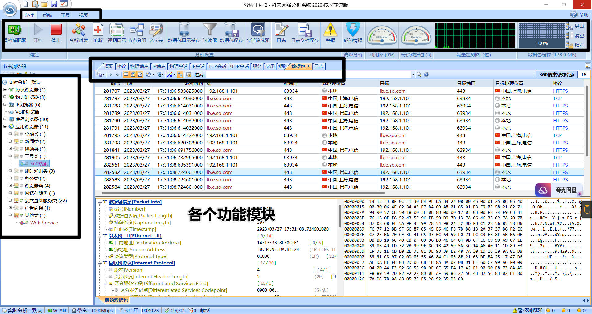

SEC学习2023版-0011
基础
逍遥模拟器的代理设置：长按wifi设置代理。
ping使用ICMP协议。 找出细节之处的差别才能学好。
抓包的目的 ：对资产信息进行安全测试.把看不到的数据实质化，转到web上去做测试。
封包和抓包 : 封包是零散的，精确到每个操作；抓包是整体的。
抓包工具配置及使用-http/https
抓包的目的：
- 安全测试，抓出来测试。
- 针对算法进行逆向，构造实现一些功能。
- 将看不见的目标转换为可以处理的目标。
准备工作：
1、浏览器安装证书：解决本地抓HTTPS
2、模拟器安装证书：解决模拟器抓HTTPS
实现目的：
0、掌握几种抓包工具证书安装操作
1、掌握几种HTTP/S抓包工具的使用
2、学会Web,APP,小程序,PC应用等抓包
3、了解此课抓包是针对那些目标什么协议
限制：
- 抓包工具协议限制为http/https
- 无法抓反代理软件的包。
工具：
- 抓包工具
- BurpSuite，Charles，Fiddler
- 转发工具
- Proxifier
应用场景：
- 浏览器抓包
- app抓包
- 小程序抓包
- PC应用(C/S端)
Fiddler
证书安装
逍遥模拟器证书安装
1.保存软件的证书
2.逍遥模拟器导入证书

浏览器证书安装
谷歌：
如果要卸载证书，但不知道证书的名字是什么，有一个简单的辨别方法：
使用二进制文件打开证书的原始文件，在里面对证书进行查看，如果看到证书名字对的上就OK了。
虽然方法土鳖，但实用。
说明
是一个http协议调试代理工具，它能够记录并检查所有你的电脑和互联网之间的http通讯，设置断点，查看所有的“进出”Fiddler的数据（指cookie,html,js,css等文件）。
Fiddler 要比其他的网络调试器要更加简单，因为它不仅仅暴露http通讯还提供了一个用户友好的格式。
简单的使用：会直接抓取数据包，不需要指定什么端口。

优点：显示有条理
Charles
安装证书
步骤与上面基本一致，故补充一个与上面不同的步骤。
获取证书：
说明
是一个HTTP代理服务器,HTTP监视器,反转代理服务器，当浏览器连接Charles的代理访问互联网时，Charles可以监控浏览器发送和接收的所有数据。
它允许一个开发者查看所有连接互联网的HTTP通信，这些包括request, response和HTTP headers （包含cookies与caching信息）。
同样，打开便会自动抓包。
可以作为抓包工具，也可以作为端口转发工具。
优点：实时抓取各种各样的数据包，展示有条理。
缺点：数据包要自己去筛选。
BurpSuite
BurpSuite更加偏向于安全测试,且仅仅支持web协议。点对点的操作数据包。
安装证书
与上面一致，补充一个获取证书的图片：
安装完成证书后依然出现“你的连接不是专用链接”：
- 证书的双重校验：安装一个bp导致证书失效。
- 浏览器证书安装错误：多装几个证书位(中间人+受信任)。
说明
是用于攻击web 应用程序的集成平台，包含了许多工具。Burp Suite为这些工具设计了许多接口，以加快攻击应用程序的过程。所有工具都共享一个请求，并能处理对应的HTTP 消息、持久性、认证、代理、日志、警报。
代理设置
使用burp，必须设置代理。
浏览器代理设置
逍遥模拟器代理设置
代理转发设置
背景：
- 微信设置代理时，很多设置比较复杂，容易干扰到正常的设置配置，造成微信宕机。
- 软件没有设置代理的地方。
限制：
- 某些软件默认权限极高，代理工具无法直接获取。
- 有一些协议软件是抓不到的，会出现“闪包”的情况(出现一下子又消失不见了)
- 小应用/小程序可以抓，大应用/大程序已经把这种权限锁死了。
- 软件有反抓包设置导致抓包时直接中断连接
- 软件协议不走http/https
Charles端口转发至BurpSuite
代理转发工具：茶杯，Proxifier。
应用场景：微信小程序抓包
说明：茶杯仅仅做一个代理转发的功能
配置方法很简单，按照下图配置完成后直接打开bp即可
基于手机模拟器已经配置完代理的情况，茶杯可以直接实现端口转发，bp不需要自身配置对应模拟器的代理。
Proxifier代理转发
Proxifier：专门用来做转发的工具。
配置好代理服务器和规则后就可以直接转发到burp当中。
新建规则的规则名可以在任务管理器的进程当中进行查看。
最好的方式：使用浏览打开程序对应的exe文件
抓包工具配置及使用-TCP/UDP等(除了http/s的其他协议)-封包
涉及工具： Wireshark 科来网络分析 封包分析
应用场景：APP，小程序，PC应用
Wireshark
说明：
是一个网络封包分析软件。网络封包分析软件的功能是截取网络封包，并尽可能显示出最为详细的网络封包资料。Wireshark使用WinPCAP作为接口，直接与网卡进行数据报文交换。使用门槛较高。不适用于新手。
功能：使用语法进行搜索。
科来网络分析系统-抓不走Web协议的数据包
说明：
使用门槛较低。是一款由科来软件全自主研发，并拥有全部知识产品的网络分析产品。该系统具有行业领先的专家分析技术，通过捕获并分析网络中传输的底层数据包，对网络故障、网络安全以及网络性能进行全面分析，从而快速排查网络中出现或潜在的故障、安全及性能问题。
软件视图如下：

功能：
- 应用分类筛选
- 应用进程筛选
- 网络接口IP筛选
还可以把数据包打开到数据包生成器查看。
WPE&封包分析
是强大的网络封包编辑器，wpe可以 截取网络上的信息，修改封包数据，是外挂制作的常用工具。一般在安全测试中可用来调试数据通讯地址。
功能：
- 选好对应的进程
- 抓通讯地址
- 封包发送测试–发送对应的数据包，会影响到游戏的相关行为。例如原本走5步，发个包就变成了回到原点
- 零散的数据包重新发送。
- X产：根据需求，抓对应功能的数据包，查看对应的通讯地址，再做对应的测试等。
TCPDump
八成是老师最好插进来的软件，课上见都没见到……
说明：可以将网络中传送的数据包完全截获下来提供分析。它支持针对网络层、协议、主机、网络或端口的过滤，并提供and、or、not等逻辑语句来帮助你去掉无用的信息。
app小程序应用做安全测试
渗透测试角度
- 抓包到应用的资产信息(IP/域名等)
- ip和域名上面的服务做测试
- Web web安全攻防
- 端口 - 数据库 第三方软件等
- 其他服务攻防
- API接口 oss资源 - 云安全
逆向破解角度
- 反编译源代码当中寻找资产信息 - 与渗透测试思路一致
- 源码中泄露的配置key - 去测试安全性
- 纯逆向
- 代码和产品的设计逻辑安全
- 不规范的加密
- 可以绕过的策略
- 自己删除验证重新打包绕过验证等
- 代码和产品的设计逻辑安全
检测防护
小程序抓不到和APP抓不到的原因：
- 打不开
- 崩溃
 wechat
wechat alipay
alipay


微信号：无
QQ：无
--------------------------------每日更新指南：
刷题/记录总知识一般会沿用上次的文档
学习新知将新开文档